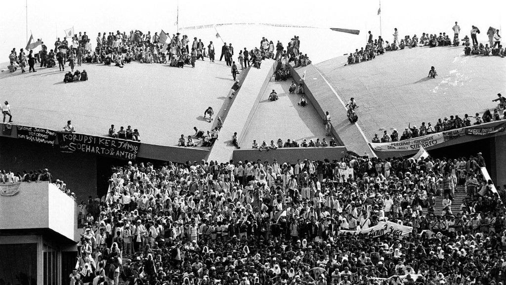

TRAGEDI TRISAKTI
Latar belakang Reformasi Indonesia dimulai dari krisis ekonomi 1997 yang memicu ketidakpuasan masyarakat terhadap pemerintahan Orde Baru. Krisis moneter melanda Asia Tenggara dan menyebabkan nilai tukar rupiah anjlok drastis...